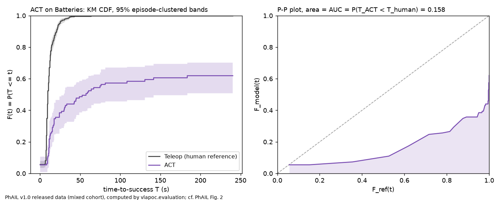
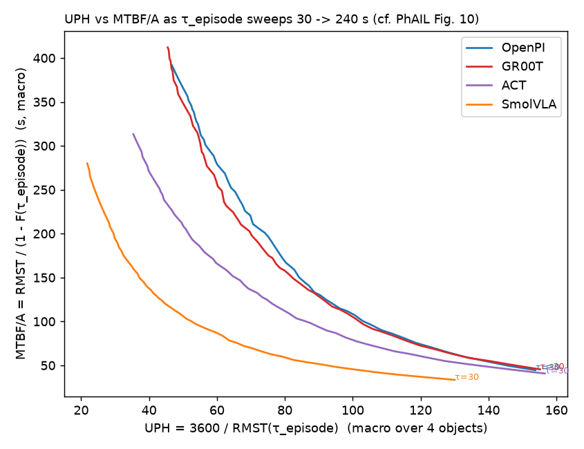

← Evaluation layer (PhAIL primitives)
On PhAIL's own released cohort (990 of its 995 episodes), our metric layer gives the same numbers as PhAIL's own code, to at most 3.6e-15. It reproduces the paper's per-object results exactly and its "four scalars, three winners" table. The p. 8 data question is answered: what is downloadable, under which license, and what is private.
The owner called PhAIL usage "crucial for this POC" (brief, decision 8). The PoC builds its main contribution on the finding that the yardstick picks the winner:
"Four principled scalars on the same data produced three different top-1 models." — PoC §3.3, p. 7
"Confirm which parts of the dataset, including the fine-tuning set, are downloadable and under what license." — PoC §3.5 B, Practical caveats, p. 8
A metric implementation that has never met the data it was designed for is a claim. Reproducing PhAIL's numbers on PhAIL's data turns it into evidence, before anything is computed on LIBERO.
| File / function | What it does |
|---|---|
scripts/phail_fetch.py | --list, --probe, --fetch: lists the public bucket (positronic-public, endpoint storage.eu-north1.nebius.cloud) and fetches the metadata sidecars only (no .parquet/.mp4). pos3 is the reproduction route: pos3.download('s3://positronic-public/phail/v1.0/dataset/', …, exclude=['*.parquet', '*.mp4'], profile=PUBLIC), the phail-paper README recipe, installed in .venv-phail. |
scripts/phail_export_cohort.py (runs in .venv-phail, Python 3.12) | Builds the "mixed" cohort with PhAIL's own loader.load('mixed'), sorts it by s3_url (round 2), writes data/phail/cohort_mixed.parquet, and computes PhAIL's reference values with PhAIL's own functions. |
scripts/phail_validate.py | Computes our layer on the same parquet and compares it with PhAIL's functions (AC2.1) and with the published files (AC2.3, AC2.4). Writes phail_validation.json and the two figures. |
vlapoc/evaluation.py::phail_cohort_arms | The one loader S2 and S7 share: {model: {object: [Episode]}}, built with PhAIL's defaults. |
| AC | Source | Result | Evidence (re-run 2026-10-11 unless noted) |
|---|---|---|---|
| AC2.1 On identical input, our F(20/30/60 s), median, RMST(240), KS and censored AUC equal PhAIL's functions to ≤ 1e-9; macro-KS p identical with the same seed | PhAIL §3 pp. 4–6 | met | max |ours - PhAIL|: pooled 0.000e+00; cells 0.000e+00; censored AUC 0.000e+00; HRT % 3.553e-15; KS per cell (24) 0.000e+00; P-P 0.000e+00; logrank 4.868e-17. macro-KS D and p identical for all 6 pairs (same RNG): True |
| AC2.2 Per-model counts against Table 2, with any missing count stated | PhAIL Table 2 p. 7 | met | OpenPI 163/165, GR00T 164/165, ACT 151/151, SmolVLA 116/118, Teleop 396/396. The 5 missing are exactly the 5 reviewed USB-C Boxes episodes under the private s3://inference/phail_act_groot/ (HTTP 403) |
| AC2.3 Published numbers side by side (incomplete branch: deltas reported and explained; AC2.1 carries the pass) | PhAIL §5 pp. 7–10 | met (branch) | tolerance checks: 23/26 within; failing: ['OpenPI RMST point ±0.1 s', 'GR00T RMST point ±0.1 s', 'SmolVLA RMST point ±0.1 s']: the three models with private episodes. Per-object HRT and all 16 cell AUCs exact |
| AC2.4 The "four yardsticks" table regenerated; "four scalars, three winners" checked | PoC §3.3 p. 7, §4.1 p. 9 | met | winners {'F(30 s)': 'GR00T', 'HRT macro (%)': 'OpenPI', 'global RMST(240 s) (s)': 'GR00T', 'AUC vs human (macro)': 'ACT'}; published GR00T/OpenPI/GR00T/ACT reproduced: True; distinct top-1: 3 |
AC2.5 HRT CI method: both bootstrap variants against tab_headline_ci.json | P19; PhAIL §3.2 p. 5 | met | 8 seeds: sum of z^2 over 8 endpoints: human_resampled 11.92, human_fixed 43.35 → resample the human anchor too (single seed: 0.628 vs 0.808 pp) |
| AC2.6 The p. 8 caveat answered with measured facts | PoC §3.5 B p. 8, §10 p. 20 | met | table below. The re-run reports croissant.json's license as the CC BY 4.0 URL (creativecommons.org/licenses/by/4.0) and mentions of a 352-episode fine-tuning set: 3 (bucket: 449); full line in summarizer_rerun_stdout.txt |
| AC2.7 Figures on real data: KM with bands, P-P plot, macro UPH vs MTBF/A sweep | §3.2 p. 6, §4.1 p. 9; PhAIL App. L | met | ACT|Batteries P-P AUC 0.1575 = PhAIL's pp_summary 0.15754457702104840; monotone over τ in [30, 240]: UPH falls and MTBF/A rises for all 4 models |
| AC2.8 The three UPH forms recorded, with the one adopted | vla-build | met | OpenPI 3600/RMST(240) = 46.4 (adopted); Table 1's 3600/E[T|T<240] = 97.1; common.py's per-episode 3600·S/T = 63.2. Up to 3× apart, and they rank ACT differently |
AC2.9 (r2) A deterministic cohort export: byte-identical across PYTHONHASHSEED | analysis-r1 E3 | met | seeds 0, 1 and unset → cohort_mixed.parquet 35b7181bc92c42c5… ×3; s2_phail_reference.json 22549627c8b4bc17… ×3 (round 2; the analyzer reproduced it) |
| Model | RMST(240 s) ours | published | HRT macro ours | published | macro-AUC ours | published | F(30 s) ours | paper |
|---|---|---|---|---|---|---|---|---|
| OpenPI | 77.572 [69.51, 86.18] | 77.693 [69.21, 86.95] | 13.755% | 13.755% | 0.1004 | 0.100 | 0.4741 | 0.47 |
| GR00T | 77.313 [69.14, 85.81] | 77.205 [68.98, 86.39] | 13.349% | 13.349% | 0.0949 | 0.095 | 0.5091 | 0.51 |
| ACT | 100.929 [86.04, 119.12] | 100.929 [85.78, 117.61] | 10.487% | 10.487% | 0.1338 | 0.134 | 0.4409 | 0.44 |
| SmolVLA | 166.373 [149.01, 184.43] | 165.776 [146.98, 185.55] | 6.445% | 6.445% | 0.0268 | 0.027 | 0.1828 | — |
| Teleop (human) | 10.516 [10.28, 10.73] | 10.516 [10.29, 10.76] | — | — | — | — | — | — |
Source: s2_phail_validate_stdout.txt (sorted export) and the re-run.
Per-object quantities (HRT is a per-object macro) match exactly: OpenPI ours 13.754838767437327 pub 13.754838767437327.
Pooled quantities miss by at most 0.6 s, and only for the models with private USB-C episodes, which have no teleop reference and so enter
only pooled numbers (s2_missing_episodes_check.txt).
| What | Where | Episodes | Size | Access |
|---|---|---|---|---|
| Evaluation rollouts | phail/v1.0/dataset/rollouts/ | 594 | 26.64 GB | public, anonymous HTTPS |
| Fine-tuning set (teleoperation) | phail/v1.0/dataset/teleoperation/ = datasets/phail/v1.0/training/ | 449 | 13.95 GB | public; not downloaded (not approved in this feature) |
| Human | phail/v1.0/dataset/human/ | 40 | 0.07 GB | public |
| Metadata sidecars (no .parquet / .mp4) | same prefix | 2,166 files | 182.5 MB | downloaded to data/phail/dataset/ |
| Private inference buckets | s3://inference/phail_act_groot/, phail_final/, spoons_ablation/ | — | — | HTTP 403 |
License: CC BY 4.0 (croissant.json). Table 2's human anchor "Teleop (396)" is the teleoperated fine-tuning cohort
(REFERENCE_MODEL = 'Robot teleoperated by Human', plan P22), the direct analogue of LIBERO's original demos. Discrepancy recorded:
croissant.json calls the fine-tuning set "352-episode" three times; the bucket and the paper say 449.
One cell end to end: ACT on Batteries against the human teleop reference. The AUC that our pp_curve integrates equals the value in
PhAIL's released pp_summary.json to every printed digit, 0.15754457702104840 (AC2.7). The executor's figure from the same run:

scripts/phail_validate.py (matplotlib), byte-identical on
every re-run. The CDFs start above 0 because PhAIL's multi-grip extras enter as T = 0 events.phail_validation.json (AC2.4); hover a dot for its 95% CI.vlapoc.evaluation). ACT is ahead early, by up to 0.09 at 9.5 s, which drives the AUC against fast humans. GR00T overtakes at
14.6 s and leads by 0.14 at the 240 s cap, which drives RMST and F(30 s). The human reference reaches 0.58 by 10 s.
monotone … True ×4). Rendered by
scripts/phail_validate.py.tab_leaderboard.json ACT 100.9451 vs tab_headline_ci.json 100.9287).
Ours matches the second, which is Table 2's source. The artifact wins, and this is recorded.build/dashboard.py cannot be imported (it needs build/fig_cdf.py, which is missing from the commit), so its H1 loop
is replicated in phail_export_cohort.py around PhAIL's own per_obj_macro_bootstrap_ks.s3_url, and every p moved (OpenPI–GR00T 0.1179 → 0.1254; GR00T–ACT 0.0105 → 0.0090).
D and the point estimates do not depend on order.--fetch. The stdlib fetcher was kept as an already-executed one-off; pos3 is named as the route to use.